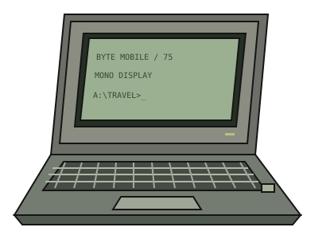
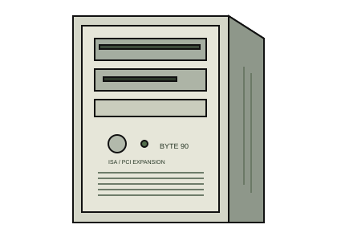

THE COLLECTION
BYTE DESKTOP / 1994
Desktop 486
486 DX2 / 4 MB RAM
14" VGA CRT / 3 × ISA
台式机与圆润 CRT 配对。前面板保留双盘位，键盘仍带着清晰的机械轮廓。
VIEW SPECIFICATIONS →
BYTE MOBILE / 1995
Notebook 75
75 MHz / 8 MB RAM
10.4" MONO LCD / 2 × PCMCIA
厚实的上盖，单色屏幕和一小块掌托。把办公桌折叠，装进旅途。
VIEW SPECIFICATIONS →

BYTE TOWER / 1996 NEW!
Tower 90
Pentium 90 / 16 MB RAM
15" VGA CRT / 2 × ISA + 2 × PCI
一台为扩展卡留下空间的塔式主机。独立声卡，让桌面第一次有了自己的声音。
VIEW SPECIFICATIONS →

AT A GLANCE
三份固定馆藏卡。参数是本页虚构系统设定，不是历史品牌产品档案。
处理器 / 显示器 / 扩展能力对照
| 项目 |
Desktop |
Notebook |
Tower |
| CPU |
486 DX2 |
75 MHz |
Pentium 90 |
| 内存 |
4 MB |
8 MB |
16 MB |
| 显示 |
14" CRT |
10.4" 单色 LCD |
15" CRT |
| 扩展 |
3 × ISA |
2 × PCMCIA |
ISA + PCI |
BUILD A MEMORY
以两块虚构主板搭配内存与扩展卡，只生成当次配置单。
先选择 CPU、内存与扩展卡。
馆内设定：BA-94 仅支持 4 / 16 MB 与 ISA；BA-96 支持本页全部选项。这不是所有 486 /
Pentium 主板的通用结论。
MAINTAINER'S NOTE
NEW!
新增三台原创低色位硬件插画与规格表。显示器、键帽、盘位和散热格栅，也值得被仔细看见。
Times 正文、蓝色下划线、原生控件留在
1996。手机单列重排与可见焦点，是这个怀旧目录的当代补充。